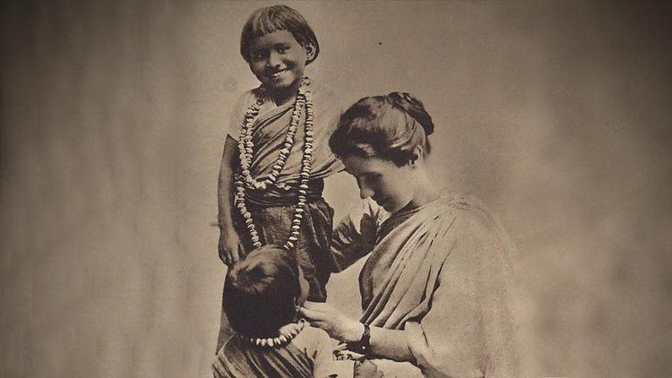

Care : Match Less

Amy Beatrice Carmichael (16 December 1867 – 18 January 1951) was an Irish Christian missionary in India who opened an orphanage and founded a mission in Dohnavur.
She served in India for 55 years and wrote 35 books about her work as a missionary.
In an attempt to respect Indian culture, members of the Dohnavur organization wore Indian dress and gave the rescued children Indian names. Carmichael herself dressed in Indian clothes and dyed her skin with dark coffee. While serving in India, Carmichael received a letter from a young lady who was considering life as a missionary, asking,
"What is missionary life like?" Carmichael wrote back, "Missionary life is simply a chance to die."